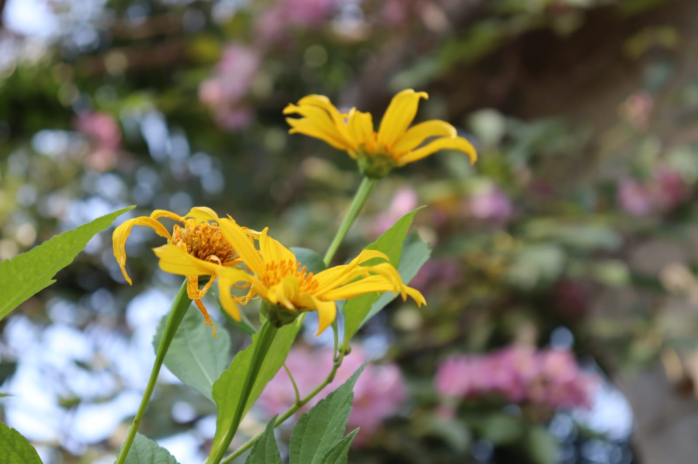
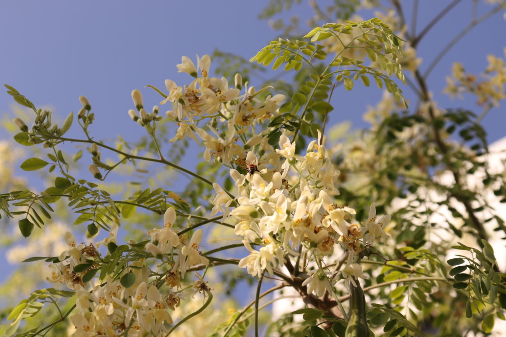

> PROYECTO: Detalles Botánicos
> OBJETIVO: Resaltar texturas y colores vibrantes.
> TÉCNICA: Enfoque selectivo y Macro.
> OBJETIVO: Resaltar texturas y colores vibrantes.
> TÉCNICA: Enfoque selectivo y Macro.



